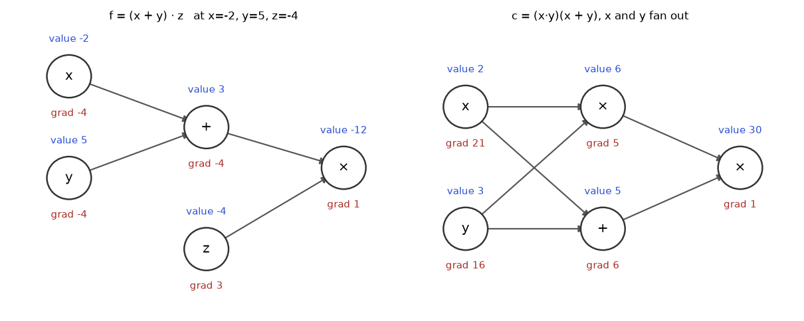
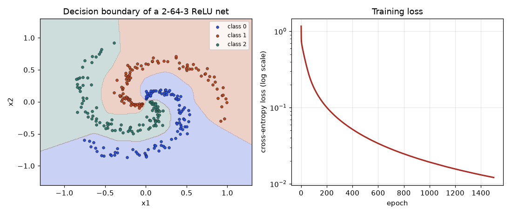
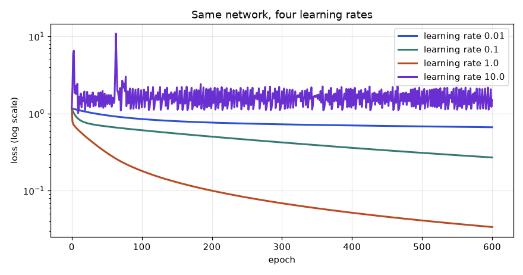
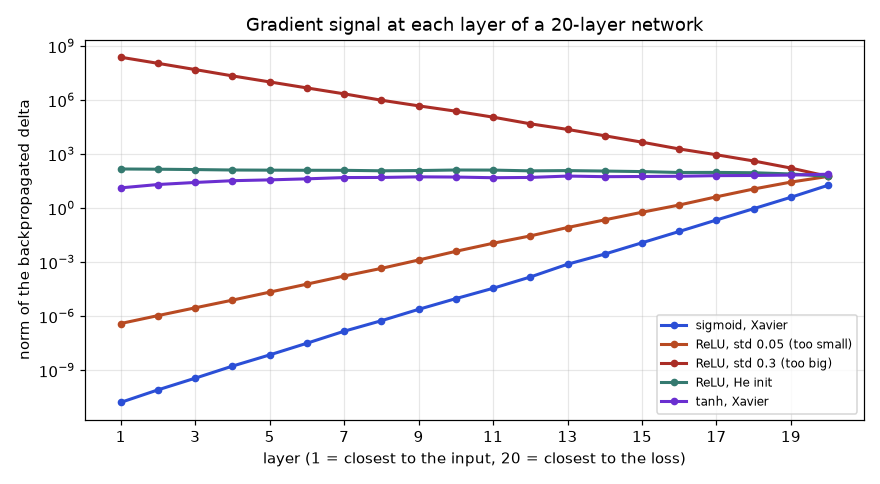

You have trained a model that predicts whether a customer will cancel a subscription. The training loop is three lines: compute the loss, call loss.backward(), call optimizer.step(). It works. Then one Tuesday the loss turns into nan after 40 steps. Or the loss does not move at all, no matter what learning rate you try. Or a colleague asks, in a design review, "why does the gradient of the first layer vanish in this architecture?" If backward() is a magic button, you can only guess. If you know what it does, you can look at the network, see where the signal is dying, and fix it.
That magic button is the chain rule from Chapter 10, applied again and again, in a clever order, with bookkeeping. It is called backpropagation, and it is the single algorithm that makes every deep network trainable, from a two-neuron toy to a model with billions of weights. In this chapter you will do it three ways: by hand with real numbers (so no step is hidden), as vectorised matrix formulas (so you can read any framework's source), and as code you write yourself (a NumPy network and a 40-line automatic differentiation engine). You will check every result against numerical derivatives.
By the end you will be able to: draw the computational graph of any formula and run its forward and backward passes; explain the rule "upstream gradient times local gradient" and why gradients add up at fan-out nodes; derive dW = δ xᵀ, db = δ, dx = Wᵀ δ and the softmax plus cross-entropy gradient p − y; train a neural network on XOR and on a spiral dataset using nothing but NumPy; check gradients numerically; explain why reverse mode wins for deep learning; diagnose vanishing and exploding gradients and choose a sound initialisation; and answer the expert questions about Jacobian-vector products, memory, checkpointing, Hessian-vector products and backpropagation through time. You need Chapter 10 (derivatives, the chain rule) and Chapter 12 (partial derivatives, gradients, the shape of Jacobians) for this one. Optimisation algorithms that use the gradient are the subject of Chapter 14.
Picture three gears connected in a row. Turn the first one once and the second turns 3 times. Turn the second once and the third turns 2 times. How many turns does the third make for one turn of the first? You multiply: 3 × 2 = 6. That is the chain rule in one sentence: when effects are chained, their rates multiply.
In symbols, if y depends on u and u depends on x, then
Read dy/du as "how many units y moves per unit of u", exactly the gear ratio. Here u is the inner quantity and y the outer one.
Problem 13.1.1 Differentiate y = (3x + 1)⁴ at x = 1.
| Split | Inner u = 3x + 1. Outer y = u⁴. |
|---|---|
| Local rates | dy/du = 4u³. du/dx = 3. |
| Multiply | dy/dx = 4u³ · 3 = 12u³. |
| Plug in | At x = 1: u = 3·1 + 1 = 4, so dy/dx = 12 · 4³ = 12 · 64 = 768. |
Problem 13.1.2 A chain of three links: y = ln(1 + e2x). Find dy/dx at x = 0.
| Name the links | u = 2x, v = eu, w = 1 + v, y = ln w. |
|---|---|
| Forward at x = 0 | u = 0, v = e⁰ = 1, w = 2, y = ln 2 ≈ 0.6931. |
| Local rates | dy/dw = 1/w = 1/2. dw/dv = 1. dv/du = eu = 1. du/dx = 2. |
| Multiply | dy/dx = (1/2) · 1 · 1 · 2 = 1. |
| Check by formula | dy/dx = 2e2x/(1 + e2x) = 2/2 = 1. ✓ |
Notice the pattern: first go forward to get the values at every link, then multiply the local rates. The local rates are evaluated at the values found on the forward pass. This two-phase habit is the whole of backpropagation.
Problem 13.1.3 (ML story) A single neuron has weight w, input x = 2 and target t = 1. Its prediction is p = w·x and the loss is L = (p − t)². With w = 0.3, how does L change when w changes?
| Forward | p = 0.3 · 2 = 0.6. L = (0.6 − 1)² = 0.16. |
|---|---|
| Local rates | dL/dp = 2(p − t) = 2(−0.4) = −0.8. dp/dw = x = 2. |
| Multiply | dL/dw = −0.8 · 2 = −1.6. |
| Meaning | Raising w by a small 0.01 lowers the loss by about 0.016. Gradient descent would therefore increase w. |
Let us confirm all three numerically. A central difference (f(x+h) − f(x−h)) / 2h approximates the derivative without any calculus.
import numpy as np
def num_deriv(f, x, h=1e-6):
return (f(x + h) - f(x - h)) / (2 * h)
print(round(num_deriv(lambda x: (3 * x + 1) ** 4, 1.0), 3))
print(round(num_deriv(lambda x: np.log(1 + np.exp(2 * x)), 0.0), 6))
print(round(num_deriv(lambda w: (w * 2 - 1) ** 2, 0.3), 4))768.0
1.0
-1.6A neural network is a long composition of simple functions. With layers f₁, f₂, ..., fK and a loss at the end:
Here θk are the parameters (weights and biases) of layer k. To train, you need ∂L/∂θk for every k. The chain rule says the gradient for layer k is the product of all the local rates between the loss and that layer:
When the a's are vectors, each "rate" is a Jacobian matrix (Chapter 12) and the product is a product of matrices. The key observation: the prefix (∂L/∂aK) ··· (∂ak+1/∂ak) for layer k is reused by layer k − 1, which only multiplies one more factor. Computing from the loss backwards, you compute each factor once and share it. That sharing is the reason backpropagation costs about the same as one forward pass instead of K separate gradient computations.
The product above also tells you what can go wrong. If most factors are smaller than 1, the product shrinks exponentially with depth (vanishing gradients). If most are larger than 1, it grows exponentially (exploding gradients). A 20-layer product of factors 0.25 is 0.25²⁰ ≈ 9 × 10⁻¹³. We will return to this in Section 13.7. Also note the order of multiplication matters for cost: for a scalar loss, multiplying left to right (loss first) is a chain of vector-matrix products, cheap; multiplying right to left (parameter first) is a chain of matrix-matrix products, expensive. That asymmetry is the heart of Section 13.6.
A computational graph draws a calculation as a diagram. Each node is one small operation (add, multiply, sigmoid) or an input. Each arrow carries a number from one node to the next. To compute f = (x + y) · z you need two operations, so the graph has two operation nodes and three input nodes.
grad or ∂f/∂node.
How to read it: blue numbers are the forward pass values, red numbers are the backward pass gradients. Start at the right node, whose gradient is always 1 (the output changes by 1 when itself changes by 1) and move left, filling in the red numbers using the rules below.
Every node follows the same rule. Suppose a node computes out = g(inputs). During the backward pass it receives the upstream gradient ∂f/∂out (how much the final output cares about this node). It knows its own local gradient ∂out/∂input for each input. It passes to each input:
That is just the chain rule written node by node. A node never needs to know the rest of the graph. This locality is why you can build any network from a library of small pieces, each with a hand-written forward and backward.
| Node | Forward | Local gradients | Backward rule (upstream = g) |
|---|---|---|---|
| add | out = a + b | 1 and 1 | a gets g, b gets g ("a distributor") |
| multiply | out = a · b | b and a | a gets g·b, b gets g·a ("a swapper") |
| square | out = a² | 2a | a gets 2a·g |
| ReLU | out = max(0, a) | 1 if a > 0 else 0 | g passes if a > 0, else 0 ("a gate") |
| sigmoid | out = σ(a) | out(1 − out) | a gets g · out(1 − out) |
| max(a, b) | larger of the two | 1 for the winner, 0 for the loser | g routes to the winner only |
Problem 13.2.1 Run both passes on f = (x + y) · z with x = −2, y = 5, z = −4.
| Forward | q = x + y = −2 + 5 = 3. f = q · z = 3 · (−4) = −12. |
|---|---|
| Start | ∂f/∂f = 1. |
| Multiply node | ∂f/∂q = 1 · z = −4. ∂f/∂z = 1 · q = 3. |
| Add node | ∂f/∂x = ∂f/∂q · 1 = −4. ∂f/∂y = ∂f/∂q · 1 = −4. |
| Meaning | Nudging z up by 0.01 moves f by about +0.03; nudging x up by 0.01 moves f by about −0.04. |
What if one value is used by two different nodes? In the right graph of the figure, x feeds both the product x·y and the sum x + y. Changing x changes the output through two separate routes. The total effect is the sum of the effects along each route. This is the multivariable chain rule from Chapter 12: ∂f/∂x = Σ over routes.
Problem 13.2.2 Run both passes on c = (x·y)(x + y) with x = 2, y = 3.
| Forward | a = x·y = 6. b = x + y = 5. c = a·b = 30. |
|---|---|
| Multiply node | ∂c/∂a = b = 5. ∂c/∂b = a = 6. |
| Node a = x·y | sends 5 · y = 5 · 3 = 15 to x, and 5 · x = 5 · 2 = 10 to y. |
| Node b = x + y | sends 6 · 1 = 6 to x, and 6 · 1 = 6 to y. |
| Accumulate | ∂c/∂x = 15 + 6 = 21. ∂c/∂y = 10 + 6 = 16. |
| Check | c = x²y + xy², so ∂c/∂x = 2xy + y² = 12 + 9 = 21 ✓ and ∂c/∂y = x² + 2xy = 4 + 12 = 16 ✓. |
x.grad = ... and x.grad += .... It is the most common bug when writing backprop by hand, and the reason PyTorch also needs optimizer.zero_grad() between steps: gradients accumulate by design.# Forward and backward by hand for both graphs
x, y, z = -2.0, 5.0, -4.0
q = x + y
f = q * z
df = 1.0
dq = df * z # multiply node: gradient to q is upstream * z
dz = df * q # gradient to z is upstream * q
dx = dq * 1.0 # add node distributes
dy = dq * 1.0
print("graph 1:", q, f, dq, dz, dx, dy)
x, y = 2.0, 3.0
a = x * y
b = x + y
c = a * b
da, db = b, a # upstream is 1
dx = da * y + db * 1.0 # two routes into x: ACCUMULATE
dy = da * x + db * 1.0
print("graph 2:", a, b, c, da, db, dx, dy)
print("wrong (overwrite):", db * 1.0)graph 1: 3.0 -12.0 -4.0 3.0 -4.0 -4.0
graph 2: 6.0 5.0 30.0 5.0 6.0 21.0 16.0
wrong (overwrite): 6.0Why must the backward pass go in reverse topological order? A node can only push its gradient to its inputs once its own gradient is complete, meaning every node that consumes it has already contributed. Reverse order guarantees that: all consumers of a node come after it in the forward order, so they come before it in the reverse order. Frameworks record the forward operations on a "tape" (a list) as they happen, then replay the tape backwards. This is called dynamic graph construction and is why PyTorch lets you use ordinary Python if and for: the graph is whatever happened on this run.
Another consequence: every intermediate value needed by a local gradient (the q and z above) must be remembered from the forward pass. That is the memory cost of backpropagation, which we quantify in Section 13.8.
Take one neuron with input x = 1.5, weight w = 0.8, bias b = −0.5, a sigmoid activation, target y = 1 and squared-error loss. The graph is a chain of five nodes:
The derivative of the sigmoid deserves a derivation because it is used everywhere. Write σ(z) = (1 + e−z)⁻¹. By the chain rule, with u = 1 + e−z:
(because 1 − σ = e−z/(1 + e−z)). The derivative is computed from the output alone, so the forward pass already stored everything the backward pass needs.
Problem 13.3.1 Do the full forward and backward pass, then one gradient descent step with learning rate 0.5. (Values shown to 4 decimals; the code below keeps full precision.)
| Forward | z = 0.8 · 1.5 + (−0.5) = 1.2 − 0.5 = 0.7. a = σ(0.7) = 1/(1 + e−0.7) = 1/(1 + 0.4966) = 0.6682. L = (0.6682 − 1)² = 0.1101. |
|---|---|
| Local 1 | ∂L/∂a = 2(a − y) = 2(0.6682 − 1) = −0.6636. |
| Local 2 | ∂a/∂z = a(1 − a) = 0.6682 · 0.3318 = 0.2217. |
| Upstream × local | ∂L/∂z = −0.6636 · 0.2217 = −0.1471. |
| Local 3 (weights) | ∂z/∂w = x = 1.5. ∂z/∂b = 1. ∂z/∂x = w = 0.8. |
| Gradients | ∂L/∂w = −0.1471 · 1.5 = −0.2207. ∂L/∂b = −0.1471 · 1 = −0.1471. ∂L/∂x = −0.1471 · 0.8 = −0.1177. |
| Update (lr 0.5) | w ← 0.8 − 0.5 · (−0.2207) = 0.9104. b ← −0.5 − 0.5 · (−0.1471) = −0.4264. |
| Check | New z = 0.9104 · 1.5 − 0.4264 = 0.9392. New a = 0.7189. New L = 0.0790, down from 0.1101 ✓. |
import numpy as np
sig = lambda z: 1 / (1 + np.exp(-z))
def loss(w, b, x=1.5, y=1.0):
return (sig(w * x + b) - y) ** 2
x, w, b, y = 1.5, 0.8, -0.5, 1.0
z = w * x + b; a = sig(z); L = (a - y) ** 2
dL_da = 2 * (a - y); da_dz = a * (1 - a)
dL_dz = dL_da * da_dz
dL_dw, dL_db, dL_dx = dL_dz * x, dL_dz * 1.0, dL_dz * w
print("z a L :", round(z, 4), round(a, 4), round(L, 4))
print("dL/da da/dz:", round(dL_da, 4), round(da_dz, 4))
print("dL/dz :", round(dL_dz, 4))
print("dL/dw dL/db dL/dx:", round(dL_dw, 4), round(dL_db, 4), round(dL_dx, 4))
# numerical check of dL/dw and dL/db
h = 1e-6
print("numeric w,b:", round((loss(w + h, b) - loss(w - h, b)) / (2 * h), 4),
round((loss(w, b + h) - loss(w, b - h)) / (2 * h), 4))
w2, b2 = w - 0.5 * dL_dw, b - 0.5 * dL_db
print("after step :", round(w2, 4), round(b2, 4), round(loss(w2, b2), 4))z a L : 0.7 0.6682 0.1101
dL/da da/dz: -0.6636 0.2217
dL/dz : -0.1471
dL/dw dL/db dL/dx: -0.2207 -0.1471 -0.1177
numeric w,b: -0.2207 -0.1471
after step : 0.9104 -0.4264 0.079A saturated neuron. The same neuron with z = 8 gives a = 0.99966 and slope a(1 − a) = 0.000335. Any upstream gradient is multiplied by 0.000335 and almost nothing reaches w. That is a "saturated" sigmoid, and a first glimpse of vanishing gradients.
Now a network with two inputs, two hidden ReLU units and one sigmoid output. Loss is L = ½(a − y)² (the ½ cancels the 2 when differentiating). One training example: x = (1, 2), target y = 0. All nine parameters:
| Parameter | Value | Role |
|---|---|---|
| W₁ row 1: w₁₁, w₁₂ | 0.5, 0.25 | weights into hidden unit 1 |
| W₁ row 2: w₂₁, w₂₂ | −0.6, 0.1 | weights into hidden unit 2 |
| b₁ = (b₁₁, b₁₂) | 0.1, 0.05 | hidden biases |
| v = (v₁, v₂) | 0.7, −0.4 | output weights |
| c | 0.2 | output bias |
Problem 13.3.2 Forward pass.
| Hidden pre-activations | z₁ = 0.5·1 + 0.25·2 + 0.1 = 0.5 + 0.5 + 0.1 = 1.1. z₂ = −0.6·1 + 0.1·2 + 0.05 = −0.6 + 0.2 + 0.05 = −0.35. |
|---|---|
| ReLU | h₁ = max(0, 1.1) = 1.1. h₂ = max(0, −0.35) = 0. |
| Output pre-activation | s = 0.7·1.1 + (−0.4)·0 + 0.2 = 0.77 + 0 + 0.2 = 0.97. |
| Sigmoid | a = σ(0.97) = 0.7251. |
| Loss | L = ½(0.7251 − 0)² = ½ · 0.5258 = 0.2629. |
Problem 13.3.3 Backward pass, one line per node, walking from the loss to the inputs.
| Loss node | ∂L/∂a = a − y = 0.7251. |
|---|---|
| Sigmoid node | ∂a/∂s = a(1 − a) = 0.7251 · 0.2749 = 0.1993. So δs = ∂L/∂s = 0.7251 · 0.1993 = 0.1445. |
| Output layer weights | ∂L/∂v₁ = δs · h₁ = 0.1445 · 1.1 = 0.1590. ∂L/∂v₂ = δs · h₂ = 0.1445 · 0 = 0. ∂L/∂c = δs · 1 = 0.1445. |
| Into the hidden layer | ∂L/∂h₁ = δs · v₁ = 0.1445 · 0.7 = 0.1012. ∂L/∂h₂ = δs · v₂ = 0.1445 · (−0.4) = −0.0578. |
| ReLU gates | z₁ = 1.1 > 0, gate open: δ₁ = 0.1012. z₂ = −0.35 < 0, gate closed: δ₂ = 0 (the −0.0578 is blocked). |
| Hidden layer weights | ∂L/∂w₁₁ = δ₁ · x₁ = 0.1012 · 1 = 0.1012. ∂L/∂w₁₂ = δ₁ · x₂ = 0.1012 · 2 = 0.2023. ∂L/∂w₂₁ = 0, ∂L/∂w₂₂ = 0. ∂L/∂b₁₁ = 0.1012, ∂L/∂b₁₂ = 0. |
| Into the input | ∂L/∂x₁ = w₁₁δ₁ + w₂₁δ₂ = 0.5 · 0.1012 + 0 = 0.0506. ∂L/∂x₂ = 0.25 · 0.1012 = 0.0253. |
Look at what happened. Hidden unit 2 was off for this example, so every weight feeding it received exactly zero gradient. A ReLU unit that is off for all examples never learns: a "dead ReLU". Also notice the multiplication by v₁ in step four: the weight of the next layer is the "local gradient" of the hidden activation, which is how information about the later layer flows back to the earlier one.
Problem 13.3.4 One gradient descent step with learning rate 1.0, then recompute the loss.
| New weights | w₁₁ = 0.5 − 0.1012 = 0.3988. w₁₂ = 0.25 − 0.2023 = 0.0477. w₂₁, w₂₂ unchanged (−0.6, 0.1). b₁₁ = 0.1 − 0.1012 = ��0.0012. b₁₂ = 0.05. v₁ = 0.7 − 0.1590 = 0.5410. v₂ = −0.4. c = 0.2 − 0.1445 = 0.0555. |
|---|---|
| New forward | z₁ = 0.3988 + 2 · 0.0477 − 0.0012 = 0.4930. h₁ = 0.4930. s = 0.5410 · 0.4930 + 0.0555 = 0.3222. a = σ(0.3222) = 0.5799. |
| New loss | L = ½ · 0.5799² = 0.1681, down from 0.2629 ✓. |
import numpy as np
sig = lambda z: 1 / (1 + np.exp(-z))
x = np.array([1.0, 2.0]); y = 0.0
W1 = np.array([[0.5, 0.25], [-0.6, 0.1]]); b1 = np.array([0.1, 0.05])
v = np.array([0.7, -0.4]); c = 0.2
def forward(W1, b1, v, c):
z = W1 @ x + b1; h = np.maximum(z, 0); s = v @ h + c; a = sig(s)
return z, h, s, a, 0.5 * (a - y) ** 2
z, h, s, a, L = forward(W1, b1, v, c)
print("z", z, "h", h, "s", round(s, 4), "a", round(a, 4), "L", round(L, 4))
ds = (a - y) * a * (1 - a) # delta at the output node
dv, dc = ds * h, ds
dh = ds * v
dz = dh * (z > 0) # ReLU gate
dW1 = np.outer(dz, x); db1 = dz
dx = W1.T @ dz
print("ds", round(ds, 4), "dv", np.round(dv, 4), "dc", round(dc, 4))
print("dz", np.round(dz, 4) + 0.0)
print("dW1", (np.round(dW1, 4) + 0.0).tolist(), "db1", np.round(db1, 4) + 0.0)
print("dx", np.round(dx, 4))
z, h, s, a, L = forward(W1 - dW1, b1 - db1, v - dv, c - dc)
print("after step: a", round(a, 4), "L", round(L, 4))z [ 1.1 -0.35] h [1.1 0. ] s 0.97 a 0.7251 L 0.2629
ds 0.1445 dv [0.159 0. ] dc 0.1445
dz [0.1012 0. ]
dW1 [[0.1012, 0.2023], [0.0, 0.0]] db1 [0.1012 0. ]
dx [0.0506 0.0253]
after step: a 0.5799 L 0.1681Real networks have thousands of units per layer, so nobody writes one line per weight. We stack numbers into vectors and matrices (Chapter 6) and the same three steps happen to whole arrays at once. Think of a layer as a machine with three jobs on the way back: (1) hand its weights a gradient, (2) hand its bias a gradient, (3) hand the layer below a gradient. The only new skill is keeping track of shapes. A good habit: the gradient of anything always has the same shape as the thing itself.
Take one layer with input x (a column of nin numbers), weight matrix W (nout × nin), bias b (nout) and output z = W x + b. Suppose the backward pass delivers δ = ∂L/∂z, a column of nout numbers. Write out one entry: zi = Σj Wij xj + bi.
The entry (i, j) of the answer is δi xj, which is exactly the outer product of the column δ with the row xᵀ:
For the bias, ∂zk/∂bi is 1 when k = i and 0 otherwise, so db = δ. For the input, each xj affects every zi with rate Wij, a fan-out. Summing over the routes:
In the previous section we computed dx = W₁ᵀ δ and dW₁ = δ xᵀ for the hidden layer, entry by entry. Same formulas. After the layer, the elementwise activation a = f(z) has a diagonal Jacobian, so its backward step is an elementwise product: δz = δa ⊙ f′(z), where ⊙ means multiply entry by entry.
Training uses a batch of N examples. Frameworks store the batch as a matrix X with one example per row, shape N × nin. The layer becomes Z = X Wᵀ + b (b is added to every row), shape N × nout. The gradient of the average loss over the batch is the average (or sum) of the per-example gradients, so the per-example outer products add up into a matrix product:
where Δ (N × nout) holds one δ per row. Why does Δᵀ X equal the sum of outer products? Entry (i, j) of Δᵀ X is Σn Δni Xnj, the sum over examples of δi xj. The bias gradient is a sum over examples because the same bias is "fanned out" to every example: fan-out sums again.
Problem 13.4.1 A layer maps 3 inputs to 2 outputs on a batch of N = 2. W = [[1, 0, −1], [2, 1, 0]], b = (0, 1). X rows: (1, 2, 3) and (0, 1, −1). The upstream gradient Δ has rows (1, −1) and (0.5, 2). Find dW, db, dX.
| Shapes | X is 2×3, W is 2×3, Δ is 2×2. Expect dW 2×3, db length 2, dX 2×3. |
|---|---|
| dW = Δᵀ X | Δᵀ = [[1, 0.5], [−1, 2]]. Row 1 of dW = 1·(1,2,3) + 0.5·(0,1,−1) = (1, 2.5, 2.5). Row 2 = −1·(1,2,3) + 2·(0,1,−1) = (−1, 0, −5). |
| db | Column sums of Δ: (1 + 0.5, −1 + 2) = (1.5, 1). |
| dX = Δ W | Row 1 = 1·(1,0,−1) + (−1)·(2,1,0) = (−1, −1, −1). Row 2 = 0.5·(1,0,−1) + 2·(2,1,0) = (4.5, 2, −0.5). |
import numpy as np
W = np.array([[1., 0., -1.], [2., 1., 0.]])
X = np.array([[1., 2., 3.], [0., 1., -1.]])
D = np.array([[1., -1.], [0.5, 2.]])
print("dW", (D.T @ X).tolist())
print("db", D.sum(axis=0).tolist())
print("dX", (D @ W).tolist())dW [[1.0, 2.5, 2.5], [-1.0, 0.0, -5.0]]
db [1.5, 1.0]
dX [[-1.0, -1.0, -1.0], [4.5, 2.0, -0.5]]dW = D @ X instead of D.T @ X raises an error when N ≠ nout (here 2×2 times 2×3 actually works but gives the wrong answer, because the sum is over the wrong index!). Always check: the inner dimension of the product must be the one you are summing over, and the result must have the shape of the parameter. Test your code with a batch size that differs from every layer width.For classification the last layer produces logits z = (z₁, ..., zK), softmax turns them into probabilities pi = ezi/S with S = Σk ezk, and the cross-entropy loss with a one-hot target y (yc = 1 for the true class c) is L = −Σ yi ln pi = −ln pc (see Chapter 15 for why this loss). Because L = −zc + ln S:
where [j = c] is 1 if j = c and 0 otherwise, which is just yj. No messy softmax Jacobian is needed: the two nodes fused together have a beautifully simple backward rule. The gradient is "what the model said minus what was true".
Problem 13.4.2 Logits z = (2, 1, 0.1), true class 0. Find p, the loss and the gradient.
| Exponentials | e² = 7.3891, e¹ = 2.7183, e0.1 = 1.1052. Sum S = 11.2126. |
|---|---|
| Probabilities | p = (7.3891, 2.7183, 1.1052)/11.2126 = (0.6590, 0.2424, 0.0986). |
| Loss | L = −ln 0.6590 = 0.4170. |
| Gradient p − y | y = (1, 0, 0), so ∂L/∂z = (0.6590 − 1, 0.2424, 0.0986) = (−0.3410, 0.2424, 0.0986). |
| Sanity | The entries sum to zero: −0.3410 + 0.2424 + 0.0986 = 0 ✓ (shifting all logits equally cannot change the probabilities). |
import numpy as np
z = np.array([2.0, 1.0, 0.1]); y = np.array([1.0, 0.0, 0.0])
def ce(z):
e = np.exp(z - z.max()); p = e / e.sum()
return -np.log(p[0])
e = np.exp(z - z.max()); p = e / e.sum()
print("p ", np.round(p, 4), " loss", round(ce(z), 4))
print("p - y ", np.round(p - y, 4), " sum", round((p - y).sum(), 12))
h = 1e-6
num = [(ce(z + h * np.eye(3)[i]) - ce(z - h * np.eye(3)[i])) / (2 * h) for i in range(3)]
print("numeric", np.round(num, 4))p [0.659 0.2424 0.0986] loss 0.417
p - y [-0.341 0.2424 0.0986] sum 0.0
numeric [-0.341 0.2424 0.0986]| Activation | a = f(z) | f′(z) | Backward: δz = δa ⊙ ... | Behaviour |
|---|---|---|---|---|
| ReLU | max(0, z) | 1 if z > 0 else 0 | (z > 0) | gate; never shrinks the gradient where active; dead when z ≤ 0 |
| sigmoid | 1/(1 + e−z) | a(1 − a) | a(1 − a) | max slope 0.25; saturates at both ends |
| tanh | (ez − e−z)/(ez + e−z) | 1 − a² | (1 − a²) | max slope 1 at 0; saturates at ±1 |
The tanh derivative follows from tanh = sinh/cosh and the quotient rule: (cosh² − sinh²)/cosh² = 1 − tanh². Notice that ReLU's local gradient is exactly 1 in its active region, while sigmoid's is at most 0.25. That single fact is a large part of why ReLU networks train deeper stacks (Section 13.7). At z = 0 exactly, ReLU has no derivative; frameworks pick 0 and it does not matter in practice.
Problem 13.4.3 Backprop through a bias-carrying layer followed by tanh. A layer has z = w·x + b with w = 2, x = 0.5, b = −0.5, then a = tanh(z). The upstream gradient on a is ∂L/∂a = 3. Find ∂L/∂w, ∂L/∂b, ∂L/∂x.
| Forward | z = 2 · 0.5 − 0.5 = 0.5. a = tanh(0.5) = 0.4621. |
|---|---|
| tanh node | f′ = 1 − a² = 1 − 0.2135 = 0.7864 (0.78645 unrounded). δz = 3 · 0.78645 = 2.3593. |
| Linear node | ∂L/∂w = δz · x = 2.3593 · 0.5 = 1.1797. ∂L/∂b = δz = 2.3593. ∂L/∂x = δz · w = 4.7187. |
import numpy as np
w, x, b, up = 2.0, 0.5, -0.5, 3.0
a = np.tanh(w * x + b)
dz = up * (1 - a ** 2)
print(round(a, 4), round(dz, 4), round(dz * x, 4), round(dz, 4), round(dz * w, 4))
f = lambda w, b, x: 3.0 * np.tanh(w * x + b) # a loss whose dL/da is exactly 3
h = 1e-6
print(round((f(w + h, b, x) - f(w - h, b, x)) / (2 * h), 4))0.4621 2.3593 1.1797 2.3593 4.7187
1.1797The complete backward pass of an L-layer MLP is a loop, and every line has been derived above. With a₀ = x, zl = Wl al−1 + bl, al = f(zl):
These four lines are "the backpropagation equations". The Jacobian view of the same loop: δl−1ᵀ = δlᵀ · Wl · diag(f′(zl−1)), a row vector times a matrix times a diagonal matrix. A scalar loss means δ is always a vector, never a matrix: the whole algorithm is a chain of vector-matrix products. The interview question "why is backprop cheap?" has exactly this answer: you never form a Jacobian, only multiply a row vector by one.
You now know every ingredient. We assemble them into a class with three methods: forward (compute predictions and remember intermediates), backward (the four backpropagation equations) and train (repeat: forward, backward, step). The convention: a batch X has one example per row, Wl has shape (nout, nin), so Z = A Wᵀ + b, exactly as in the batch formulas above. The loss is the mean cross-entropy, so the starting delta is (p − y)/N.
Read backward against the equations: dZ.T @ self.As[i] is dW = Δᵀ Aprev; dZ.sum(axis=0) is db; dZ @ self.W[i] is dX = Δ W; multiplying by df(...) is the activation gate. That is the whole of backpropagation in a dozen lines. The block below holds the class plus three experiments: a gradient check, XOR and a spiral. (Python blocks in this chapter are standalone, so the class is pasted once, here.)
import numpy as np
def softmax(Z):
E = np.exp(Z - Z.max(axis=1, keepdims=True)) # subtract max for stability
return E / E.sum(axis=1, keepdims=True)
class MLP:
def __init__(self, sizes, act="relu", seed=0):
rng = np.random.default_rng(seed)
self.act = act
self.W, self.b = [], []
for n_in, n_out in zip(sizes[:-1], sizes[1:]):
gain = 2.0 if act == "relu" else 1.0 # He for relu, Xavier-like for tanh
self.W.append(rng.normal(0, np.sqrt(gain / n_in), (n_out, n_in)))
self.b.append(np.zeros(n_out))
def f(self, Z):
return np.maximum(Z, 0) if self.act == "relu" else np.tanh(Z)
def df(self, Z, A):
return (Z > 0).astype(float) if self.act == "relu" else 1 - A**2
def forward(self, X):
self.As, self.Zs = [X], []
A = X
for i, (W, b) in enumerate(zip(self.W, self.b)):
Z = A @ W.T + b # (N, n_out)
self.Zs.append(Z)
A = self.f(Z) if i < len(self.W) - 1 else Z
self.As.append(A)
return softmax(self.As[-1]) # class probabilities
def loss(self, P, y):
return -np.log(P[np.arange(len(y)), y]).mean()
def backward(self, P, y):
N = len(y)
dZ = P.copy()
dZ[np.arange(N), y] -= 1 # p - y (one-hot)
dZ /= N # mean over the batch
gW, gb = [None] * len(self.W), [None] * len(self.W)
for i in reversed(range(len(self.W))):
gW[i] = dZ.T @ self.As[i] # (n_out, n_in)
gb[i] = dZ.sum(axis=0)
if i > 0:
dA = dZ @ self.W[i] # (N, n_in)
dZ = dA * self.df(self.Zs[i-1], self.As[i])
return gW, gb
def train(self, X, y, lr=0.5, epochs=1000, every=250):
hist = []
for ep in range(epochs + 1):
P = self.forward(X)
L = self.loss(P, y)
hist.append(L)
if every and ep % every == 0:
acc = (P.argmax(axis=1) == y).mean()
print(f"epoch {ep:5d} loss {L:.4f} acc {acc:.3f}")
gW, gb = self.backward(P, y)
for i in range(len(self.W)):
self.W[i] -= lr * gW[i]
self.b[i] -= lr * gb[i]
return hist
# ---------- 1. gradient check on a tiny tanh network ----------
def numeric_grad(net, X, y, h=1e-5):
grads = []
for arr in net.W + net.b:
g = np.zeros_like(arr)
for idx in np.ndindex(*arr.shape):
old = arr[idx]
arr[idx] = old + h; Lp = net.loss(net.forward(X), y)
arr[idx] = old - h; Lm = net.loss(net.forward(X), y)
arr[idx] = old
g[idx] = (Lp - Lm) / (2 * h)
grads.append(g)
return grads
def rel_error(ga, gn):
a = np.concatenate([g.ravel() for g in ga]); n = np.concatenate([g.ravel() for g in gn])
return np.linalg.norm(a - n) / (np.linalg.norm(a) + np.linalg.norm(n))
rng = np.random.default_rng(5)
Xs = rng.normal(size=(5, 3)); ys = np.array([0, 2, 1, 1, 0])
net = MLP([3, 4, 3], act="tanh", seed=1)
P = net.forward(Xs); gW, gb = net.backward(P, ys)
gn = numeric_grad(net, Xs, ys)
print("relative error, correct backward:", f"{rel_error(gW + gb, gn):.1e}")
bad = [g * len(ys) for g in gW + gb] # bug: forgot the 1/N
print("relative error, buggy backward :", f"{rel_error(bad, gn):.2f}")
# ---------- 2. XOR ----------
X = np.array([[0, 0], [0, 1], [1, 0], [1, 1.0]]); y = np.array([0, 1, 1, 0])
net = MLP([2, 4, 2], act="tanh", seed=1)
net.train(X, y, lr=0.5, epochs=1000, every=250)
print("P(class 1) for the four XOR inputs:", np.round(net.forward(X)[:, 1], 3))
# ---------- 3. three-arm spiral ----------
def spiral(n=100, k=3, seed=0):
rng = np.random.default_rng(seed)
X = np.zeros((n * k, 2)); y = np.zeros(n * k, dtype=int)
for j in range(k):
r = np.linspace(0.05, 1, n)
t = np.linspace(j * 4, (j + 1) * 4, n) + rng.normal(0, 0.2, n)
X[j*n:(j+1)*n] = np.c_[r * np.sin(t), r * np.cos(t)]
y[j*n:(j+1)*n] = j
return X, y
Xtr, ytr = spiral(seed=0); Xte, yte = spiral(seed=1)
net = MLP([2, 64, 3], act="relu", seed=0)
net.train(Xtr, ytr, lr=1.0, epochs=1000, every=250)
test_acc = (net.forward(Xte).argmax(axis=1) == yte).mean()
print("test accuracy on fresh spiral noise:", round(test_acc, 3))relative error, correct backward: 4.5e-11
relative error, buggy backward : 0.67
epoch 0 loss 0.7162 acc 0.500
epoch 250 loss 0.0218 acc 1.000
epoch 500 loss 0.0065 acc 1.000
epoch 750 loss 0.0036 acc 1.000
epoch 1000 loss 0.0024 acc 1.000
P(class 1) for the four XOR inputs: [0.001 0.998 0.997 0.004]
epoch 0 loss 1.1686 acc 0.227
epoch 250 loss 0.0818 acc 1.000
epoch 500 loss 0.0411 acc 1.000
epoch 750 loss 0.0266 acc 1.000
epoch 1000 loss 0.0193 acc 1.000
test accuracy on fresh spiral noise: 0.997
How to read it: each coloured region is where the network predicts one class. The boundaries curl around the spiral arms, something no straight line (no linear model, Chapter 7) could do. The loss curve falls quickly then slowly: early steps fix big mistakes, later steps polish the boundary.
The first two printed lines are the most important lines of the whole experiment. Gradient checking compares the analytical gradient from backward with a numerical gradient made by nudging each parameter: gnum = (L(θ + h) − L(θ − h))/(2h). The comparison uses the relative error
It is relative because absolute differences mean nothing if the gradients themselves are tiny. As a rule of thumb with float64 and h = 10⁻⁵: below 10⁻⁷ is excellent, around 10⁻⁵ deserves a look, above 10⁻³ is a bug. The correct code lands around 10⁻¹⁰. The deliberately buggy version, which forgot the 1/N from the mean, scores 0.67 (exactly (N − 1)/(N + 1) = 4/6 for N = 5, because it is N times too large). A bug that large is unmistakable; subtler bugs (a wrong transpose, a missing bias gradient) land between 10⁻¹ and 10⁻³.
The XOR run shows the classic lesson: no single straight line separates the points (0,0), (1,1) from (0,1), (1,0), but four tanh hidden units do it, and the loss falls from about 0.7 (a coin flip, ln 2) to nearly 0 with accuracy 1.000. On the spiral the loss starts at 1.17 (close to ln 3 = 1.0986, the loss of guessing all three classes equally) and ends near 0.02 after 1000 epochs. Because the test set was generated with different noise, the test accuracy tells you the network learned the spiral shape and not just the 300 training points.
The gradient tells you the direction; the learning rate α decides the step: θ ← θ − α ∇L. Chapter 14 studies this in depth, but you need the intuition now to read loss curves. On the simplest bowl, L(w) = w², the gradient is 2w and one step gives w ← w − α·2w = (1 − 2α) w. Each step multiplies w by the factor (1 − 2α). If |1 − 2α| < 1 the iterates shrink to 0; if it is larger, they blow up.
w0 = 1.0
for lr in [0.01, 0.1, 0.5, 1.0, 1.1]:
w = w0
for step in range(10):
w = w - lr * 2 * w # gradient of w**2 is 2w
print(f"lr {lr:5.2f} factor {1 - 2*lr:6.2f} w after 10 steps {w:9.4f}")lr 0.01 factor 0.98 w after 10 steps 0.8171
lr 0.10 factor 0.80 w after 10 steps 0.1074
lr 0.50 factor 0.00 w after 10 steps 0.0000
lr 1.00 factor -1.00 w after 10 steps 1.0000
lr 1.10 factor -1.20 w after 10 steps 6.1917
How to read it: a very small rate (blue) is safe but slow, still above 0.6 after 600 epochs. A moderate rate (teal) learns steadily. The best rate here (orange, 1.0) reaches about 0.03. A rate that is too large (purple, 10) never settles: the loss bounces around 1 to 10 with spikes, because each step overshoots the valley, exactly like the factor 1 − 2α = −1.2 above. Rules of thumb when you read a curve: loss rising or nan means the rate is too high (or a gradient exploded); a very flat curve means it is too low (or gradients are vanishing); a noisy curve that plateaus above a good value means lower the rate later in training.
We have been walking the graph backwards. You could also walk it forwards, carrying along, with each value, a second number: "how fast is this value changing if I wiggle one chosen input?" That is forward-mode differentiation. It answers one question per sweep: the derivative of everything with respect to one input. Backward (reverse-mode) answers the opposite question per sweep: the derivative of one output with respect to everything. Neural networks have one output (the loss) and millions of inputs (the weights). That settles it.
Neither is "numerical differentiation" (finite differences) and neither is "symbolic differentiation" (expanding a formula like a CAS). Automatic differentiation computes exact derivatives, up to floating-point rounding, by applying the chain rule to the actual sequence of operations executed.
Forward mode is easy to build. A dual number carries a pair (value, derivative). Each operation updates both using its local rule: (a, a′) + (b, b′) = (a + b, a′ + b′) and (a, a′) · (b, b′) = (ab, a′b + ab′), the product rule. Seed the input you care about with derivative 1 and the others with 0.
Problem 13.6.1 f(x₁, x₂, x₃, x₄) = x₁x₂ + x₂x₃ + x₃x₄ + x₄x₁ at x = (1, 2, 3, 4). Find the gradient with forward mode and count the sweeps.
| By hand | ∂f/∂x₁ = x₂ + x₄ = 6. ∂f/∂x₂ = x₁ + x₃ = 4. ∂f/∂x₃ = x₂ + x₄ = 6. ∂f/∂x₄ = x₃ + x₁ = 4. |
|---|---|
| Forward mode | Sweep 1 seeds x₁ with derivative 1 and gets f′ = 6. Sweep 2 seeds x₂, and so on: 4 sweeps for 4 inputs. |
| Reverse mode | One forward pass plus one backward pass gives all four derivatives: 1 sweep (costing about 2 to 3 forward passes). |
class Dual:
"""A number that carries (value, derivative)."""
def __init__(self, v, d=0.0):
self.v, self.d = v, d
def __add__(self, o):
o = o if isinstance(o, Dual) else Dual(o)
return Dual(self.v + o.v, self.d + o.d)
def __mul__(self, o):
o = o if isinstance(o, Dual) else Dual(o)
return Dual(self.v * o.v, self.d * o.v + self.v * o.d) # product rule
def f(x):
return x[0]*x[1] + x[1]*x[2] + x[2]*x[3] + x[3]*x[0]
point = [1.0, 2.0, 3.0, 4.0]
grad, sweeps = [], 0
for i in range(4): # one sweep per input
xs = [Dual(p, 1.0 if j == i else 0.0) for j, p in enumerate(point)]
grad.append(f(xs).d)
sweeps += 1
print("forward-mode gradient:", grad, " sweeps:", sweeps)
n = 1e8 # parameters in a modest network
seconds = n * 1.0 # one second per forward sweep
print("forward mode for 1e8 weights:", round(seconds / (3600 * 24 * 365), 2), "years")forward-mode gradient: [6.0, 4.0, 6.0, 4.0] sweeps: 4
forward mode for 1e8 weights: 3.17 years| Function f: Rn → Rm | Forward mode | Reverse mode |
|---|---|---|
| One sweep computes | a column of the Jacobian, J·v (a JVP) | a row of the Jacobian, uᵀ·J (a VJP) |
| Sweeps for the full Jacobian | n | m |
| Memory | small (no need to store the forward pass) | stores intermediate values for the backward pass |
| Best when | few inputs, many outputs (n ≪ m) | many inputs, few outputs (m ≪ n), such as loss with millions of weights |
| Cost of the gradient of a scalar loss | n × (forward cost) | about 2 to 3 × (forward cost), independent of n |
That last cell is the economic miracle of deep learning, sometimes called the "cheap gradient principle": the gradient of a scalar function costs only a small constant times the function itself, no matter how many parameters it has. Forward mode for 10⁸ weights would take 3 years of forward passes; reverse mode takes a few seconds. Forward mode still has niches: sensitivity of a simulation to a handful of physical parameters, and computing Hessian-vector products (Section 13.8).
Now we build the reverse-mode machine: a Value class that wraps a number, remembers which values it was computed from, and knows how to push gradient back to them. This is the idea behind micrograd, PyTorch and JAX, in 50 lines. Each operation defines its own small _backward closure using the rule upstream × local and accumulates with +=. The backward() method sorts the graph topologically (parents before children), sets the output's gradient to 1, and calls the closures in reverse order.
import math
class Value:
def __init__(self, data, parents=()):
self.data = float(data)
self.grad = 0.0
self._parents = parents
self._backward = lambda: None
def __add__(self, other):
other = other if isinstance(other, Value) else Value(other)
out = Value(self.data + other.data, (self, other))
def _backward():
self.grad += out.grad # add: distribute
other.grad += out.grad
out._backward = _backward
return out
def __mul__(self, other):
other = other if isinstance(other, Value) else Value(other)
out = Value(self.data * other.data, (self, other))
def _backward():
self.grad += other.data * out.grad # multiply: swap
other.grad += self.data * out.grad
out._backward = _backward
return out
def __pow__(self, k): # k is a plain number
out = Value(self.data ** k, (self,))
def _backward():
self.grad += k * self.data ** (k - 1) * out.grad
out._backward = _backward
return out
def exp(self):
out = Value(math.exp(self.data), (self,))
def _backward():
self.grad += out.data * out.grad # d exp(z) = exp(z)
out._backward = _backward
return out
def tanh(self):
t = math.tanh(self.data)
out = Value(t, (self,))
def _backward():
self.grad += (1 - t ** 2) * out.grad
out._backward = _backward
return out
def relu(self):
out = Value(max(0.0, self.data), (self,))
def _backward():
self.grad += (self.data > 0) * out.grad # the gate
out._backward = _backward
return out
def __neg__(self): return self * -1
def __sub__(self, other): return self + (-other)
def __radd__(self, other): return self + other
def __rmul__(self, other): return self * other
def __truediv__(self, other): return self * (other ** -1)
def __rtruediv__(self, other): return other * (self ** -1)
def backward(self):
topo, seen = [], set()
def build(v): # depth-first topological sort
if v not in seen:
seen.add(v)
for p in v._parents:
build(p)
topo.append(v) # appended AFTER its parents
build(self)
self.grad = 1.0 # d output / d output
for v in reversed(topo): # consumers before producers
v._backward()
def sigmoid(z):
return 1 / (1 + (-z).exp())
# 1. a tanh neuron: n = x1*w1 + x2*w2 + b, o = tanh(n)
x1, x2, w1, w2 = Value(2.0), Value(0.0), Value(-3.0), Value(1.0)
b = Value(6.8813735870195432)
o = (x1 * w1 + x2 * w2 + b).tanh()
o.backward()
print("tanh neuron o:", round(o.data, 4), " grads x1 w1 x2 w2:", round(x1.grad, 4), round(w1.grad, 4), round(x2.grad, 4), round(w2.grad, 4))
# 2. fan-out graph c = (x*y)(x+y) at x=2, y=3
x, y = Value(2.0), Value(3.0)
c = (x * y) * (x + y)
c.backward()
print("fan-out c:", c.data, " dx dy:", x.grad, y.grad)
# 3. the sigmoid neuron of Section 13.3
w, b, xin = Value(0.8), Value(-0.5), Value(1.5)
L = (sigmoid(w * xin + b) - 1) ** 2
L.backward()
print("sigmoid neuron L:", round(L.data, 4), " dw db dx:", round(w.grad, 4), round(b.grad, 4), round(xin.grad, 4))
# 4. the two-layer network of Section 13.3
xs = [Value(1.0), Value(2.0)]
W1 = [[Value(0.5), Value(0.25)], [Value(-0.6), Value(0.1)]]
b1 = [Value(0.1), Value(0.05)]
v = [Value(0.7), Value(-0.4)]; c0 = Value(0.2)
h = [(W1[i][0] * xs[0] + W1[i][1] * xs[1] + b1[i]).relu() for i in range(2)]
a = sigmoid(v[0] * h[0] + v[1] * h[1] + c0)
L = 0.5 * (a - 0) ** 2
L.backward()
print("MLP L:", round(L.data, 4))
print("dW1 row1:", round(W1[0][0].grad, 4), round(W1[0][1].grad, 4), " row2:", W1[1][0].grad, W1[1][1].grad)
print("dv:", round(v[0].grad, 4), v[1].grad, " dc:", round(c0.grad, 4), " dx:", round(xs[0].grad, 4), round(xs[1].grad, 4))
# 5. forward-mode example from above, reverse mode, ONE backward call
p = [Value(t) for t in (1.0, 2.0, 3.0, 4.0)]
f = p[0]*p[1] + p[1]*p[2] + p[2]*p[3] + p[3]*p[0]
f.backward()
print("reverse-mode gradient:", [q.grad for q in p], " backward calls: 1")tanh neuron o: 0.7071 grads x1 w1 x2 w2: -1.5 1.0 0.5 0.0
fan-out c: 30.0 dx dy: 21.0 16.0
sigmoid neuron L: 0.1101 dw db dx: -0.2207 -0.1471 -0.1177
MLP L: 0.2629
dW1 row1: 0.1012 0.2023 row2: 0.0 0.0
dv: 0.159 0.0 dc: 0.1445 dx: 0.0506 0.0253
reverse-mode gradient: [6.0, 4.0, 6.0, 4.0] backward calls: 1Every number matches the hand results: ∂o/∂x₁ = −1.5, ∂o/∂w₁ = 1.0 (the tanh neuron, where n = 0.8814 and 1 − tanh² = 0.5, so x₁'s gradient is w₁ · 0.5 = −1.5), the 21 and 16 of the fan-out graph, the −0.2207, −0.1471, −0.1177 of the sigmoid neuron, and the 0.1012, 0.2023, 0.1590, 0.1445, 0.0506, 0.0253 of the two-layer network, including the exact zeros for the dead ReLU row. The engine reuses nothing but the rule upstream × local.
self.grad = other.data * out.grad instead of += in the engine. For y = x·x with x = 3 the multiply node sends gradient to the same node twice: with = the second overwrites the first and you get 3; with += you get 3 + 3 = 6 = 2x ✓. Two more traps: forgetting to reset .grad to zero before a second backward call on the same graph (gradients stack up, which PyTorch also does), and calling the closures in forward order, which pushes incomplete gradients.Three details separate this toy from a production engine. (1) Tensors: PyTorch's nodes hold whole arrays, and each op's _backward uses the matrix formulas of Section 13.4 (a matmul node stores W and x, and its backward is two matmuls). (2) Memory: closures keep the forward values alive; a framework frees the graph after backward() unless you pass retain_graph=True. (3) Higher order: because the backward closures are themselves built from differentiable operations, a framework can record them too (create_graph=True) and differentiate the gradient, which gives second derivatives (Section 13.8).
PyTorch tensors with requires_grad=True record every operation in a graph of grad_fn objects, like our _parents and _backward. Calling .backward() on the scalar loss runs the reverse topological sweep and accumulates into each leaf's .grad. The equivalent of Section 13.3's sigmoid neuron and of our tanh neuron is shown in comments below. Torch is not installed in this environment, so the PyTorch lines are not run here. The Python that does run just prints the values you should see.
# ---- PyTorch equivalent (NOT RUN HERE: torch is not installed in this environment) ----
# import torch
# x1 = torch.tensor(2.0, requires_grad=True); w1 = torch.tensor(-3.0, requires_grad=True)
# x2 = torch.tensor(0.0, requires_grad=True); w2 = torch.tensor(1.0, requires_grad=True)
# b = torch.tensor(6.8813735870195432, requires_grad=True)
# o = torch.tanh(x1 * w1 + x2 * w2 + b)
# o.backward() # fills .grad of every leaf
# print(x1.grad.item(), w1.grad.item(), x2.grad.item(), w2.grad.item())
#
# Typical training step in PyTorch (also not run here):
# model = torch.nn.Sequential(torch.nn.Linear(2, 64), torch.nn.ReLU(), torch.nn.Linear(64, 3))
# opt = torch.optim.SGD(model.parameters(), lr=1.0)
# loss_fn = torch.nn.CrossEntropyLoss() # softmax + cross-entropy fused (p - y backward)
# for epoch in range(1000):
# opt.zero_grad() # gradients ACCUMULATE, so reset them
# loss = loss_fn(model(X), y) # forward builds the graph
# loss.backward() # backward sweeps it
# opt.step() # theta -= lr * grad
# with torch.no_grad(): ... # evaluation: no graph, less memory
print("expected from the hand calculation: -1.5 1.0 0.5 0.0 (x1, w1, x2, w2)")expected from the hand calculation: -1.5 1.0 0.5 0.0 (x1, w1, x2, w2)zero_grad()?" Because backward() accumulates (+=) into .grad; that is the fan-out rule applied across calls, and it is useful for gradient accumulation over several micro-batches. "Why is reverse mode used for training?" One scalar output, millions of inputs: one backward sweep costs a small multiple of the forward pass, forward mode would need one sweep per parameter.In the children's game of telephone, a message passes through twenty people. If each person whispers a bit quieter, the last person hears nothing. If each person shouts a bit louder, the last person is deafened. Backpropagation sends a gradient message through every layer, and each layer multiplies it by its local factors (Section 13.1). Twenty factors of 0.25 make the message almost silent; twenty factors of 3 make it enormous. In the first case the early layers barely learn (vanishing gradients); in the second the weights jump wildly or become nan (exploding gradients).
Problem 13.7.1 Why is a deep sigmoid network in trouble even in the best case?
| Max slope | σ′(z) = σ(1 − σ) is largest at z = 0, where it is 0.5 · 0.5 = 0.25. |
|---|---|
| One layer | Passing a gradient through one sigmoid multiplies it by at most 0.25 (times the weights). |
| Ten layers | 0.25¹⁰ = 1/1,048,576 ≈ 9.5 × 10⁻⁷. |
| Twenty layers | 0.25²⁰ ≈ 9.1 × 10⁻¹³. Unless the weights are large, the first layers see essentially zero gradient. |
The experiment: build a 20-layer network of width 100, send a random batch forward, then push a gradient of ones back from the last layer and record the norm of the delta (the quantity δ of Section 13.4) at every layer. The code covers five settings, then checks how the forward signal behaves under two weight scales.
import numpy as np
def delta_norms(act, std, L=20, n=100, N=64, seed=0):
rng = np.random.default_rng(seed)
Ws = [rng.normal(0, std, (n, n)) for _ in range(L)]
a = rng.normal(size=(N, n)); As = [a]; Zs = []
for W in Ws:
z = a @ W.T; Zs.append(z)
a = 1/(1+np.exp(-z)) if act == "sigmoid" else np.maximum(z, 0) if act == "relu" else np.tanh(z)
As.append(a)
d = np.ones((N, n)); out = []
for i in reversed(range(L)):
if act == "sigmoid": d = d * As[i+1] * (1 - As[i+1])
elif act == "relu": d = d * (Zs[i] > 0)
else: d = d * (1 - As[i+1]**2)
out.append(np.linalg.norm(d)); d = d @ Ws[i]
return out[::-1] # index 0 = layer closest to the input
n = 100
cases = [("sigmoid, Xavier", "sigmoid", np.sqrt(1/n)), ("relu, std 0.05", "relu", 0.05),
("relu, std 0.3", "relu", 0.3), ("relu, He", "relu", np.sqrt(2/n)), ("tanh, Xavier", "tanh", np.sqrt(1/n))]
print(f"{'setting':18s} {'layer 1':>10s} {'layer 10':>10s} {'layer 20':>10s}")
for name, act, std in cases:
g = delta_norms(act, std)
print(f"{name:18s} {g[0]:10.1e} {g[9]:10.1e} {g[19]:10.1e}")
rng = np.random.default_rng(0)
for name, var in [("Var(w) = 1/n", 1.0), ("Var(w) = 2/n (He)", 2.0)]:
a = rng.normal(size=(1000, 500))
for _ in range(20):
a = np.maximum(a @ rng.normal(0, np.sqrt(var / 500), (500, 500)).T, 0)
print(name, "RMS of layer-20 activations:", f"{np.sqrt((a**2).mean()):.4f}")setting layer 1 layer 10 layer 20
sigmoid, Xavier 1.7e-11 9.6e-06 1.9e+01
relu, std 0.05 4.0e-07 4.1e-03 5.9e+01
relu, std 0.3 2.4e+08 2.5e+05 5.9e+01
relu, He 1.5e+02 1.3e+02 5.9e+01
tanh, Xavier 1.4e+01 5.4e+01 7.8e+01
Var(w) = 1/n RMS of layer-20 activations: 0.0008
Var(w) = 2/n (He) RMS of layer-20 activations: 0.7336
How to read it: moving from right (loss) to left (input) the sigmoid line (blue) falls by about twelve orders of magnitude, so the first layer receives a signal roughly a trillion times weaker than the last. ReLU with a too-small scale (orange) vanishes too, ReLU with a too-large scale (dark red) explodes by more than six orders of magnitude, while He initialisation (teal) is almost flat. Tanh with Xavier (purple) is nearly flat, with mild decay. The straight lines are the signature of a per-layer multiplicative factor.
We want each layer to preserve the scale of the signal. Consider one unit z = Σj=1n wj aj, with n inputs. Assume the weights are independent, have mean 0 and variance Var(w), and are independent of the inputs aj. Then the terms are independent with mean 0 and
Linear or tanh units (near zero): a ≈ z of the previous layer, so E[a²] ≈ Var(zprev). To keep Var(z) = Var(zprev) we need n · Var(w) = 1, that is Var(w) = 1/nin. The same argument for the backward pass (δprev = Wᵀ δ sums over nout terms) asks for 1/nout. Xavier (Glorot) initialisation compromises: Var(w) = 2/(nin + nout).
ReLU units: a = max(0, z) with z symmetric around 0, so half the mass is zeroed and E[a²] = ½ Var(zprev). Now Var(z) = n · Var(w) · ½ · Var(zprev), and we need n · Var(w)/2 = 1, that is Var(w) = 2/nin (He initialisation). The factor 2 compensates the half that ReLU kills.
Problem 13.7.2 A layer has 512 inputs and uses ReLU. What standard deviation should its weights have, and what happens with 1/n instead?
| He | Var(w) = 2/512 = 0.00390625, so std = √0.00390625 = 0.0625. |
|---|---|
| Xavier-style 1/n | Var(w) = 1/512, std = 0.0442. |
| Effect with 1/n | Each ReLU layer shrinks E[a²] by a factor 1/2, so after 20 layers the RMS has dropped by (1/2)¹⁰ ≈ 0.001. The code above measured 0.0008, while He measured 0.73 (order one, with sampling noise). |
A residual block computes y = x + F(x) instead of y = F(x). The derivative is ∂y/∂x = I + ∂F/∂x. Over L blocks the backward signal is multiplied by (I + JL)···(I + J₁). Expand the product: one term is I·I···I = I, a path where the gradient goes straight through with factor exactly 1, plus terms involving the J's. The identity "highway" cannot vanish, however small the J's are. Residual networks (ResNets, and every transformer) rely on it to train hundreds of layers.
import numpy as np
rng = np.random.default_rng(1)
n, L = 50, 30
Js = [rng.normal(0, 0.05, (n, n)) for _ in range(L)] # small layer Jacobians
u = np.ones(n) / np.sqrt(n) # gradient arriving at the top, norm 1
plain, res = u.copy(), u.copy()
for J in Js:
plain = J.T @ plain # plain network: multiply by J
res = (np.eye(n) + J).T @ res # residual network: multiply by (I + J)
print("plain 30 layers :", f"{np.linalg.norm(plain):.1e}")
print("residual 30 layers:", f"{np.linalg.norm(res):.2f}")plain 30 layers : 3.5e-14
residual 30 layers: 5.22The same gradient shrinks to 3 × 10⁻¹⁴ in the plain stack and stays of order 5 (not vanishing) with skip connections. Residual blocks can still explode if the J's are large, which is why transformers add normalisation and scale the residual branch at initialisation.
Batch normalisation rescales a feature to zero mean and unit variance over the batch: x̂i = (xi − μ)/σ̂, with μ the batch mean and σ̂ = √(var + ε). For backpropagation the catch is that μ and σ̂ depend on every example in the batch. Example i influences output j through three routes: directly (only when i = j), through the mean, and through the variance. These routes fan out and must be summed. Collecting them gives, for a single feature over a batch of N,
Two sanity facts: the gradient sums to zero over the batch (adding a constant to every x changes nothing, because the mean is subtracted), and it is orthogonal to x̂ (scaling every x changes nothing). Treating μ and σ̂ as constants would give the naive dx̂i/σ̂, which is wrong. The code verifies the formula numerically and shows how far off the naive version is. It also shows gradient clipping, the standard guard against explosions: if the total gradient norm exceeds a limit, scale every gradient down so the norm equals the limit.
import numpy as np
rng = np.random.default_rng(0)
x = rng.normal(size=6) * 2 + 1
g = rng.normal(size=6) # upstream gradient dL/d xhat, with L = sum(g * xhat)
eps = 1e-5
def bn(x):
return (x - x.mean()) / np.sqrt(x.var() + eps)
xhat = bn(x); sd = np.sqrt(x.var() + eps); N = len(x)
dx = (N * g - g.sum() - xhat * (g * xhat).sum()) / (N * sd) # full batchnorm backward
naive = g / sd # pretends mean and variance are constants
L = lambda x: (g * bn(x)).sum()
h = 1e-6
num = np.array([(L(x + h*np.eye(N)[i]) - L(x - h*np.eye(N)[i])) / (2*h) for i in range(N)])
print("full formula :", np.round(dx, 4))
print("numeric :", np.round(num, 4))
print("naive (wrong):", np.round(naive, 4))
print("max error full vs numeric:", f"{np.abs(dx - num).max():.1e}", " |sum of dx|:", abs(round(dx.sum(), 10)))
# gradient clipping by global norm
grads = [np.array([30.0, -40.0]), np.array([0.0, 120.0])]
total = np.sqrt(sum((q**2).sum() for q in grads))
scale = min(1.0, 5.0 / total)
print("global norm", round(total, 2), " scale", round(scale, 5), " clipped:", [np.round(q * scale, 4).tolist() for q in grads])full formula : [ 1.8412 1.2868 -0.7335 -1.642 -0.9502 0.1977]
numeric : [ 1.8412 1.2868 -0.7335 -1.642 -0.9502 0.1977]
naive (wrong): [ 1.7648 1.2818 -0.9524 -1.7126 -0.8435 0.0559]
max error full vs numeric: 2.5e-10 |sum of dx|: 0.0
global norm 130.0 scale 0.03846 clipped: [[1.1538, -1.5385], [0.0, 4.6154]]For a function with Jacobian J (Chapter 12), two products matter. A JVP, J v, pushes a direction v from the input side to the output side: it is what forward mode computes and answers "if I move the inputs along v, how do the outputs move?" A VJP, uᵀ J, pulls a weighting u from the output side to the input side: it is what reverse mode computes and answers "how sensitive is the weighted sum uᵀ(output) to each input?". Backpropagation is a chain of VJPs, one per layer, where u is the current δ. Frameworks never build J. For z = W x the VJP with respect to x is Wᵀu; for an elementwise activation, J is diagonal, so the VJP is an elementwise product; for a softmax over a vocabulary of 50,000 words, J would have 2.5 × 10⁹ entries (10 GB in float32) per token, but its VJP needs only O(n) work.
Each primitive therefore ships with exactly one function: "given u, return uᵀJ". For softmax, J = diag(p) − ppᵀ, so uᵀJ = p ⊙ u − p (p·u) = p ⊙ (u − p·u): no matrix needed.
The backward pass needs the forward values (the local gradients use them). A network with L layers, batch N and width n stores about L · N · n numbers for activations (more, if each layer keeps both pre-activation and activation). Compute is cheap but memory is the usual limit.
Problem 13.8.1 50 layers, batch 512, width 4096, float32 (4 bytes), storing both z and a per layer.
| Per layer | 512 · 4096 · 4 bytes = 8,388,608 bytes = 8 MiB per tensor, so 16 MiB for z and a together. |
|---|---|
| All layers | 50 · 16 MiB = 800 MiB ≈ 0.78 GiB, for activations only (weights, gradients and optimiser state come on top). |
Gradient checkpointing trades compute for memory: store only every s-th layer's activation (a "checkpoint"). During the backward pass, when you reach a segment, recompute its forward pass from the nearest checkpoint, keeping that one segment's activations in memory. Memory is about L/s checkpoints plus s live activations; the extra compute is roughly one more forward pass (since backward costs about twice a forward pass, training becomes about 33% slower). The minimum of L/s + s is at s = √L.
import numpy as np
# VJP of softmax without the Jacobian
z = np.array([2.0, 1.0, 0.1]); u = np.array([1.0, -2.0, 0.5])
p = np.exp(z) / np.exp(z).sum()
J = np.diag(p) - np.outer(p, p)
print("u^T J (explicit Jacobian) :", np.round(u @ J, 4))
print("p * (u - p.u) (no Jacobian):", np.round(p * (u - p @ u), 4))
# memory of stored activations
layers, batch, width, nbytes = 50, 512, 4096, 4
per_layer = batch * width * nbytes * 2
print("MiB per layer:", per_layer / 2**20, " all layers GiB:", round(layers * per_layer / 2**30, 3))
# checkpointing: stored tensors = L/s checkpoints + s live activations
L = 100
for s in [1, 5, 10, 20, 50, 100]:
print(f"segment {s:3d}: stored activations {L // s + s}")u^T J (explicit Jacobian) : [ 0.5118 -0.539 0.0273]
p * (u - p.u) (no Jacobian): [ 0.5118 -0.539 0.0273]
MiB per layer: 16.0 all layers GiB: 0.781
segment 1: stored activations 101
segment 5: stored activations 25
segment 10: stored activations 20
segment 20: stored activations 25
segment 50: stored activations 52
segment 100: stored activations 101With L = 100, plain storage keeps 100 activations; segments of 10 keep 10 + 10 = 20, a 5× memory saving for about one extra forward pass. (The rows s = 1 and s = 100 are the degenerate ends: both cost 101 here.) Large language models train with exactly this trick, usually combined with mixed precision.
The Hessian H (all second derivatives, Chapter 12) of a model with 10⁸ parameters has 10¹⁶ entries, about 40 petabytes in float32: impossible to store. But the Hessian-vector product H v is cheap. Since H v = ∇θ(∇L(θ) · v), you can get it by differentiating the dot product of the gradient with a fixed vector: one more backward sweep through the graph of the backward pass (this is what create_graph=True allows), costing a small multiple of one gradient. A cruder alternative uses a finite difference of gradients: H v ≈ (∇L(θ + εv) − ∇L(θ − εv))/(2ε), two gradient evaluations. HVPs power conjugate-gradient Newton methods, Lanczos estimates of the largest Hessian eigenvalue (a "sharpness" measure) and influence functions. Check with logistic regression, where the Hessian of the mean log loss is Xᵀ diag(s(1 − s)) X / N, with s the sigmoid of the scores:
import numpy as np
rng = np.random.default_rng(0)
X = rng.normal(size=(50, 3))
y = (X @ np.array([1., -2., 0.5]) + rng.normal(size=50) > 0) * 2.0 - 1 # labels in {-1, +1}
sig = lambda t: 1 / (1 + np.exp(-t))
def grad(w): # gradient of mean log(1 + exp(-y x.w))
return X.T @ (-y * sig(-y * (X @ w))) / len(y)
w = np.array([0.3, -0.1, 0.2]); v = np.array([1.0, 2.0, -1.0])
s = sig(X @ w)
H = X.T @ (X * (s * (1 - s))[:, None]) / len(y) # exact Hessian
eps = 1e-5
hv_fd = (grad(w + eps * v) - grad(w - eps * v)) / (2 * eps) # no Hessian needed
print("exact H v :", np.round(H @ v, 6))
print("gradient diff :", np.round(hv_fd, 6))exact H v : [ 0.317444 0.358911 -0.173782]
gradient diff : [ 0.317444 0.358911 -0.173782]A recurrent network applies the same weights at every time step: ht = f(w ht−1 + xt). Unroll it over T steps and you get a very deep graph whose layers share a parameter. Two consequences. First, the shared weight fans out to T places, so its gradient is the sum over time steps of the per-step contributions (fan-out accumulation again). Second, the gradient reaching the start is a product of T identical Jacobian factors:
so the vanishing or exploding behaviour of Section 13.7 appears with depth T, and with the same weight at every step it is as sharp as it gets: a factor 0.9 gives 0.9³⁰ = 0.042, a factor 1.1 gives 1.1³⁰ = 17.4. Remedies: gradient clipping against explosion, gated cells (LSTM, GRU) whose near-identity paths act like residual connections against vanishing, and truncated BPTT, which backpropagates only the last k steps to bound memory and the product length. Transformers sidestep the long product with attention paths that connect distant positions directly.
import numpy as np
def chain_grad(w, T=30, tanh_act=True):
"""d h_T / d h_0 for h_t = f(w * h_{t-1} + 0.1), as a product of local factors."""
h, jac = 0.5, 1.0
for _ in range(T):
h = np.tanh(w * h + 0.1) if tanh_act else w * h + 0.1
jac *= w * (1 - h**2) if tanh_act else w
return jac
def numeric(w, T=30, e=1e-6):
def run(h0):
h = h0
for _ in range(T): h = np.tanh(w * h + 0.1)
return h
return (run(0.5 + e) - run(0.5 - e)) / (2 * e)
print(f"{'w':>5s} {'linear w^30':>12s} {'tanh chain':>12s} {'tanh numeric':>13s}")
for w in [0.9, 1.1, 1.5]:
print(f"{w:5.1f} {chain_grad(w, tanh_act=False):12.3e} {chain_grad(w):12.3e} {numeric(w):13.3e}")w linear w^30 tanh chain tanh numeric
0.9 4.239e-02 7.132e-06 7.132e-06
1.1 1.745e+01 4.907e-08 4.907e-08
1.5 1.918e+05 1.443e-15 0.000e+00With a linear recurrence, w = 1.1 explodes (17.4) and w = 0.9 fades (0.042). With tanh the saturating slope 1 − h² adds a second shrinking factor, so even w = 1.1 and w = 1.5 vanish: tanh turns a would-be explosion into silence, which is one reason plain RNNs forget long-range information. The chain-rule product matches the numerical derivative in the first two rows; at w = 1.5 both are zero to machine precision.
+= across micro-batches, then one step), mixed precision (halve activation bytes), and offloading. Quote the trade: about 1.33× compute for √L memory. "What is the cost of a Hessian-vector product?" A small constant times a gradient, without ever forming the Hessian.+=), never overwritten.Value with parents, a local backward closure, a topological sort and +=; PyTorch is the same idea on tensors.| Formula / pattern | Meaning |
|---|---|
| dy/dx = dy/du · du/dx | chain rule: multiply local rates |
| ∂f/∂in = (∂f/∂out)(∂out/∂in) | upstream × local, the rule of every node |
| ∂f/∂x = Σ over routes | fan-out accumulation |
| σ′ = σ(1 − σ), tanh′ = 1 − tanh² | derivatives computed from the stored output |
| dW = δxᵀ, db = δ, dx = Wᵀδ | linear layer backward (single example) |
| dW = ΔᵀX, dX = ΔW | batch version, one example per row |
| ∂L/∂z = p − y | softmax plus cross-entropy |
| Var(w) = 2/nin (ReLU), 2/(nin + nout) (Xavier) | keep activation and gradient scale constant |
| y = x + F(x) ⇒ ∂y/∂x = I + ∂F/∂x | identity highway for gradients |
| (L(θ+h) − L(θ−h))/2h | numerical gradient for checking |
| Hv ≈ (∇L(θ+εv) − ∇L(θ−εv))/2ε | Hessian-vector product without the Hessian |
Problem 13.1 Differentiate y = (2x + 1)³ at x = 1 with the chain rule.
Answer: Inner u = 2x + 1 = 3 at x = 1. dy/du = 3u² = 27, du/dx = 2, so dy/dx = 27 · 2 = 54. (Forgetting the inner factor gives 27, wrong.)
Problem 13.2 For f = a·b + c with a = 2, b = −3, c = 4, run the forward and backward pass and give ∂f/∂a, ∂f/∂b, ∂f/∂c.
Answer: Forward: p = a·b = −6, f = p + c = −2. Backward: ∂f/∂p = 1, ∂f/∂c = 1. Multiply node swaps: ∂f/∂a = 1 · b = −3, ∂f/∂b = 1 · a = 2. So (−3, 2, 1).
Problem 13.3 Draw the graph of f = x · (x + 2) and compute df/dx at x = 3 using the fan-out rule. Check with calculus.
Answer: Forward: a = x + 2 = 5, f = x · a = 15. Backward: the multiply node sends ∂f/∂x (route 1) = a = 5 and ∂f/∂a = x = 3. The add node sends 3 · 1 = 3 to x (route 2). Total ∂f/∂x = 5 + 3 = 8. Calculus: f = x² + 2x, f′ = 2x + 2 = 8 ✓.
Problem 13.4 A sigmoid neuron has x = 2, w = 0.5, b = 0 and target y = 0, loss L = (a − y)². Find ∂L/∂w.
Answer: z = 0.5 · 2 + 0 = 1. a = σ(1) = 0.7311. ∂L/∂a = 2(a − 0) = 1.4621. ∂a/∂z = a(1 − a) = 0.7311 · 0.2689 = 0.1966. ∂L/∂z = 1.4621 · 0.1966 = 0.2875. ∂L/∂w = 0.2875 · x = 0.5750 (0.5749 with unrounded intermediates). (A positive gradient: decreasing w lowers the loss.)
Problem 13.5 Logits (1, 2, 3), true class 1 (the second one, counting from 0). Give the softmax probabilities and the gradient of the cross-entropy with respect to the logits.
Answer: Exponentials 2.7183, 7.3891, 20.0855, sum 30.1929. p = (0.0900, 0.2447, 0.6652). With y = (0, 1, 0), p − y = (0.0900, −0.7553, 0.6652). The entries sum to 0 ✓.
Problem 13.6 A layer maps 5 inputs to 3 outputs, batch size 8. Give the shapes of W, b, X, Z, Δ, dW, db, dX.
Answer: W: 3×5, b: 3, X: 8×5, Z = XWᵀ + b: 8×3, Δ: 8×3, dW = ΔᵀX: (3×8)(8×5) = 3×5, db = column sums of Δ: 3, dX = ΔW: (8×3)(3×5) = 8×5. Every gradient has the shape of its variable.
Problem 13.7 Find the bug. A student's engine multiplies with self.grad = other.data * out.grad; other.grad = self.data * out.grad and tests y = x · x at x = 3. What does it return, and what is correct?
Answer: Here self and other are the same object x. The first line sets x.grad = 3 · 1 = 3, the second overwrites it with 3 · 1 = 3. Result 3. Correct is dy/dx = 2x = 6. Fix: use += in both lines, giving 3 + 3 = 6.
Problem 13.8 Ten sigmoid layers each pass the gradient through the maximum possible slope. What is the largest the gradient factor can be, ignoring the weights? Why does this make deep sigmoid networks hard to train?
Answer: σ′ ≤ 0.25, so the factor is at most 0.25¹⁰ = 1/1,048,576 ≈ 9.5 × 10⁻⁷. Weights of size around 1 do not rescue it: the first layers get about a millionth of the learning signal of the last layer, so they barely move.
Problem 13.9 A gradient check returns analytic 0.75 and numeric 0.70 for one parameter. Compute the relative error and decide whether to trust the backward code.
Answer: |0.75 − 0.70|/max(0.75, 0.70) = 0.05/0.75 = 0.067 (using the other form, 0.05/(0.75 + 0.70) = 0.034). Either way it is far above 10⁻³: do not trust the code. Look for a missing term, a wrong transpose or a missing 1/N. A correct float64 implementation gives about 10⁻⁹.
Problem 13.10 A 20-block residual network has F(x) = 0.1x in every block, and a plain network has the same layers without the skip. Compare the gradient factors from output to input.
Answer: Plain: each layer has derivative 0.1, so 0.1²⁰ = 10⁻²⁰. Residual: each block has derivative 1 + 0.1 = 1.1, so 1.1²⁰ = 6.7275. The identity path turns total vanishing into mild growth; with a larger F′ the product could explode, which is why residual branches are scaled and normalised.
Problem 13.11 Gradient checkpointing: a network of 36 layers stores one 1 MiB activation per layer. How much memory do the activations need without checkpointing and with checkpoints every 6 layers?
Answer: Without: 36 MiB. With segments of s = 6: 36/6 = 6 checkpoints plus 6 live activations = 12 MiB, a 3× saving. Cost: about one extra forward pass (around 33% more compute), same gradient.
Problem 13.12 (Expert, derive) Show that the gradient of softmax cross-entropy sums to zero, and explain what this says about the logits.
Answer: ∂L/∂zj = pj − yj. Sum over j: Σpj − Σyj = 1 − 1 = 0. So moving the logits along (1, 1, ..., 1) never changes the loss: softmax is shift-invariant, and its gradient has no component along that direction. This also explains why subtracting max(z) before exponentiating is safe.
Problem 13.13 (Interview) You must train a network with 10⁸ parameters and one scalar loss. Why use reverse mode rather than forward mode, and what does it cost?
Answer: Forward mode yields one column of the Jacobian per sweep, so the gradient needs 10⁸ sweeps. Reverse mode yields the whole gradient of a scalar in one backward sweep, costing about 2 to 3 forward passes regardless of the parameter count. The price is memory: reverse mode must store intermediate activations, which checkpointing can reduce.
Problem 13.14 (Interview, BPTT) An RNN is trained on sequences of length 200 and the loss does not improve for early time steps. Give two likely reasons and two fixes.
Answer: Reasons: vanishing gradients (a product of 200 factors below 1, for example tanh slopes and recurrent weights with spectral norm below 1) and exploding gradients (factors above 1, seen as loss spikes or nan). Fixes: gradient clipping by global norm for explosion; gated cells (LSTM or GRU) or orthogonal initialisation of the recurrent matrix for vanishing; truncated BPTT to bound the product; or switch to attention-based models.
You are my patient, practical professor. I am a working professional moving into data roles. Teach me the chain rule and backpropagation step by step: computational graphs, forward and backward passes, upstream times local gradients, fan-out accumulation, the layer formulas dW = delta x^T, db = delta, dx = W^T delta, softmax plus cross-entropy giving p - y, and vanishing or exploding gradients. Start from my level (school algebra plus basic derivatives), use one small numeric example per idea with every multiplication shown, then quiz me with 8 questions of increasing difficulty, one at a time. Wait for my answer, tell me exactly where my reasoning went wrong, and only then continue.
Act as a careful reviewer of my backpropagation work. I will paste either a hand calculation on a small network or my NumPy / micro-autograd code. Check each step: are the forward values right, is every local gradient evaluated at the right value, are gradients accumulated (+=) at fan-out nodes, do all gradient shapes match their variables, is the 1/N for the mean loss present, and does a numerical gradient check agree? List every error with the corrected line and the reason, explain what symptom it would cause during training (nan, flat loss, slow first layers), and suggest a gradient-check test that would have caught it. Do not just give me the final answer, show the corrected steps.
Run a mock technical interview for a machine learning engineer role, focused on backpropagation. Ask me one question at a time: derive the softmax cross-entropy gradient, explain reverse versus forward mode and why reverse wins for training, explain vanishing gradients and why ReLU, He initialisation and residual connections help, compute a small backward pass by hand, explain gradient checkpointing and its trade-off, and explain what a Hessian-vector product is. After each answer, score me from 1 to 5, give the model answer in plain language, and point out what a strong candidate would add. Finish with a summary of my weak spots and a 3-day practice plan.